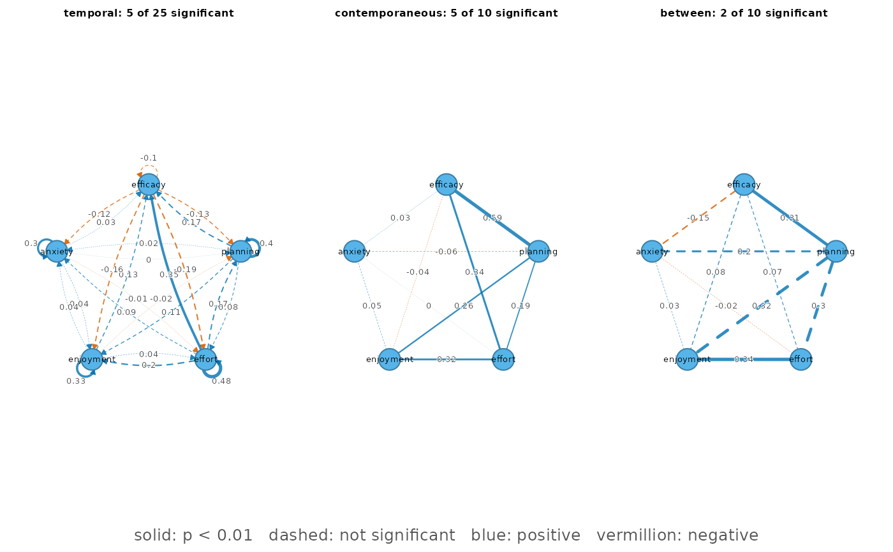

Methods for the object returned by panel_gvar().
Usage
# S3 method for class 'psychnet_panelgvar'
as.data.frame(
x,
row.names = NULL,
optional = FALSE,
...,
what = c("edges", "parameters", "fit", "diagnostics", "variance", "covariance", "path"),
include_zero = FALSE
)
# S3 method for class 'psychnet_panelgvar'
print(x, ...)
# S3 method for class 'psychnet_panelgvar'
summary(object, ...)
# S3 method for class 'psychnet_panelgvar'
plot(x, edge_labels = TRUE, ...)Arguments
- x, object
A
psychnet_panelgvarobject.- row.names, optional
Ignored (S3 consistency).
- ...
Passed to
cograph::splot()byplot(); named arguments override the plotting defaults, with unique argument abbreviations accepted. Otherwise ignored.- what
For
as.data.frame():"edges"(default; one row per estimated edge across the three networks, with standard error, p-value and 95% Wald interval – temporal rows include the autoregressivefrom == toeffects),"parameters"(every model parameter, including means, scalingdeltas, and fixed/pruned entries),"fit"(one row of fit indices), or"diagnostics"(one row: personsn,waves, the MLscorecertificate,boundary/boundary_part,se_available, andstarts_agreeofstartsoptimizer starts reaching the best optimum – of the saturated fit, or withselect = "ebic"of the penalized solve at the selected lambda, or of its refit whenrefit = TRUE; agreement is judged on the unit-free standardized objective),"variance"(one row per variable: the model-impliedbetween-person variance, the stationarywithin-person variance, andshare_between, their ratio to the total – an intraclass correlation),"covariance"(one row per entry of the lower triangle, diagonal included, of the innovation (contemporaneous) and between-person covariance matrices on the data scale: columnsmatrix("innovation"or"between"),row,col,value), or"path"(select = "ebic"only, else apsychnet_bad_inputerror: one row per lambda on the penalty path, columnslambda(data-scale penalty),ebic,edges(non-zero penalized parameters),kkt(lasso KKT residual),final(re-solved to certification) andselected(the lambda returned)).- include_zero
For
what = "edges": also return pruned (fixed-zero) edges. DefaultFALSE.- edge_labels
For
plot(): print each edge's weight on it. DefaultTRUE.
Value
as.data.frame(): a data.frame as described under what. The edge
table has columns network, from, to, weight, se, p,
ci_lower, ci_upper, significant (p < the fit's alpha); the
parameter table has matrix, row, col,
estimate, se, p, ci_lower, ci_upper, fixed; the diagnostics
row has n, waves, score, boundary, boundary_part,
se_available, starts_agree, starts; the variance table has
variable, between, within, share_between. print() and
plot() return x invisibly. summary() returns a data.frame with one
row per network (network, directed, nodes, edges, significant,
mean_abs_weight).
Details
By default, plot() draws the three networks side by side on one shared circle
layout (so a node sits in the same place in every panel), with the
temporal autoregressive effects as self-loops. Line type shows
significance: solid edges have p < alpha (the fit's alpha), dashed
edges do not (an edge without a p-value counts as not significant). Colour
shows sign – blue positive, vermillion negative (Okabe-Ito) – and the
signed weight is printed on each edge, so sign never rests on colour
alone. A network with nothing estimated shows "no edges". It needs the
cograph package. If edge_style is overridden, the legend no longer
assigns significance to solid or dashed lines.
Examples
# srl_panel: 100 students x 4 weeks, simulated from a panel-GVAR in which
# effort in one week drives efficacy in the next.
fit <- panel_gvar(srl_panel,
vars = c("efficacy", "planning", "effort", "enjoyment",
"anxiety"),
id = "student", wave = "week")
summary(fit)
#> network directed nodes edges significant mean_abs_weight
#> 1 temporal TRUE 5 20 1 0.1046718
#> 2 contemporaneous FALSE 5 10 5 0.1877681
#> 3 between FALSE 5 10 2 0.1831649
as.data.frame(fit, what = "parameters")
#> matrix row col estimate se p
#> 1 mu efficacy <NA> 55.419110375 0.96332583 0.000000e+00
#> 2 mu planning <NA> 58.430209254 0.98885373 0.000000e+00
#> 3 mu effort <NA> 60.027776333 1.06107488 0.000000e+00
#> 4 mu enjoyment <NA> 55.313175056 0.90700581 0.000000e+00
#> 5 mu anxiety <NA> 59.159915264 1.08359273 0.000000e+00
#> 6 omega_zeta_within planning efficacy 0.591106125 0.04431346 1.369209e-40
#> 7 omega_zeta_within effort efficacy 0.342448405 0.06025581 1.321643e-08
#> 8 omega_zeta_within enjoyment efficacy -0.038177031 0.06832147 5.763083e-01
#> 9 omega_zeta_within anxiety efficacy 0.028205118 0.06800858 6.783404e-01
#> 10 omega_zeta_within effort planning 0.188697279 0.06478954 3.585880e-03
#> 11 omega_zeta_within enjoyment planning 0.255668116 0.06276252 4.629603e-05
#> 12 omega_zeta_within anxiety planning -0.062045823 0.06668056 3.521157e-01
#> 13 omega_zeta_within enjoyment effort 0.317013534 0.06007371 1.312612e-07
#> 14 omega_zeta_within anxiety effort 0.002383863 0.06667728 9.714799e-01
#> 15 omega_zeta_within anxiety enjoyment 0.051935419 0.06629439 4.333888e-01
#> 16 delta_zeta_within efficacy efficacy 4.076518276 0.19502889 5.121317e-97
#> 17 delta_zeta_within planning planning 3.926979518 0.18729931 1.331403e-97
#> 18 delta_zeta_within effort effort 4.922106278 0.23282273 3.339011e-99
#> 19 delta_zeta_within enjoyment enjoyment 5.636586719 0.26550541 5.084023e-100
#> 20 delta_zeta_within anxiety anxiety 7.299608916 0.34223768 6.101839e-101
#> 21 beta efficacy efficacy -0.096672635 0.13467200 4.728574e-01
#> 22 beta planning efficacy -0.127621701 0.12388997 3.029530e-01
#> 23 beta effort efficacy -0.185033790 0.13554948 1.722328e-01
#> 24 beta enjoyment efficacy -0.161261754 0.13020900 2.155367e-01
#> 25 beta anxiety efficacy -0.122338773 0.13119129 3.510668e-01
#> 26 beta efficacy planning 0.173937878 0.14529357 2.312490e-01
#> 27 beta planning planning 0.396614715 0.15188718 9.021313e-03
#> 28 beta effort planning 0.084407115 0.15504123 5.861544e-01
#> 29 beta enjoyment planning 0.114456276 0.14927613 4.432349e-01
#> 30 beta anxiety planning 0.024730130 0.15150380 8.703365e-01
#> 31 beta efficacy effort 0.352722389 0.11519665 2.199257e-03
#> 32 beta planning effort 0.168996084 0.11367355 1.370996e-01
#> 33 beta effort effort 0.483841150 0.13198874 2.465897e-04
#> 34 beta enjoyment effort 0.196809315 0.11886939 9.778725e-02
#> 35 beta anxiety effort 0.087931626 0.12119415 4.681187e-01
#> 36 beta efficacy enjoyment 0.125084640 0.10252259 2.224387e-01
#> 37 beta planning enjoyment -0.015083147 0.10027960 8.804404e-01
#> 38 beta effort enjoyment 0.035363362 0.10913195 7.459061e-01
#> 39 beta enjoyment enjoyment 0.325408489 0.12000699 6.696350e-03
#> 40 beta anxiety enjoyment 0.036854988 0.10677727 7.299759e-01
#> 41 beta efficacy anxiety 0.026009263 0.08031053 7.460450e-01
#> 42 beta planning anxiety 0.003375992 0.07857850 9.657308e-01
#> 43 beta effort anxiety -0.014936851 0.08549642 8.613096e-01
#> 44 beta enjoyment anxiety 0.036480078 0.08218780 6.571420e-01
#> 45 beta anxiety anxiety 0.296628278 0.10027278 3.094278e-03
#> 46 omega_zeta_between planning efficacy 0.313900573 0.11991975 8.855349e-03
#> 47 omega_zeta_between effort efficacy 0.069437587 0.13041944 5.944369e-01
#> 48 omega_zeta_between enjoyment efficacy 0.083371182 0.14572743 5.672518e-01
#> 49 omega_zeta_between anxiety efficacy -0.148011468 0.12809365 2.478881e-01
#> 50 omega_zeta_between effort planning 0.302598713 0.11877742 1.084632e-02
#> 51 omega_zeta_between enjoyment planning 0.316230825 0.13044624 1.534117e-02
#> 52 omega_zeta_between anxiety planning 0.196830672 0.12719722 1.217560e-01
#> 53 omega_zeta_between enjoyment effort 0.344615578 0.12950101 7.788502e-03
#> 54 omega_zeta_between anxiety effort -0.023216660 0.13180138 8.601770e-01
#> 55 omega_zeta_between anxiety enjoyment 0.033435880 0.14994682 8.235472e-01
#> 56 delta_zeta_between efficacy efficacy 7.096563839 0.63845479 1.057926e-28
#> 57 delta_zeta_between planning planning 6.244114798 0.58260461 8.417191e-27
#> 58 delta_zeta_between effort effort 7.124688044 0.64896348 4.845572e-28
#> 59 delta_zeta_between enjoyment enjoyment 5.680043494 0.67515497 3.998331e-17
#> 60 delta_zeta_between anxiety anxiety 9.447080263 0.90290122 1.277086e-25
#> ci_lower ci_upper fixed
#> 1 53.53102645 57.30719430 FALSE
#> 2 56.49209157 60.36832694 FALSE
#> 3 57.94810778 62.10744489 FALSE
#> 4 53.53547634 57.09087377 FALSE
#> 5 57.03611254 61.28371798 FALSE
#> 6 0.50425334 0.67795891 FALSE
#> 7 0.22434919 0.46054762 FALSE
#> 8 -0.17208466 0.09573060 FALSE
#> 9 -0.10508924 0.16149948 FALSE
#> 10 0.06171212 0.31568244 FALSE
#> 11 0.13265584 0.37868039 FALSE
#> 12 -0.19273733 0.06864568 FALSE
#> 13 0.19927123 0.43475583 FALSE
#> 14 -0.12830121 0.13306894 FALSE
#> 15 -0.07799920 0.18187004 FALSE
#> 16 3.69426868 4.45876787 FALSE
#> 17 3.55987962 4.29407941 FALSE
#> 18 4.46578211 5.37843045 FALSE
#> 19 5.11620569 6.15696775 FALSE
#> 20 6.62883539 7.97038244 FALSE
#> 21 -0.36062490 0.16727963 FALSE
#> 22 -0.37044157 0.11519817 FALSE
#> 23 -0.45070588 0.08063830 FALSE
#> 24 -0.41646671 0.09394320 FALSE
#> 25 -0.37946898 0.13479144 FALSE
#> 26 -0.11083229 0.45870805 FALSE
#> 27 0.09892130 0.69430813 FALSE
#> 28 -0.21946811 0.38828234 FALSE
#> 29 -0.17811957 0.40703212 FALSE
#> 30 -0.27221186 0.32167212 FALSE
#> 31 0.12694110 0.57850368 FALSE
#> 32 -0.05379998 0.39179215 FALSE
#> 33 0.22514798 0.74253432 FALSE
#> 34 -0.03617041 0.42978904 FALSE
#> 35 -0.14960455 0.32546780 FALSE
#> 36 -0.07585594 0.32602522 FALSE
#> 37 -0.21162754 0.18146125 FALSE
#> 38 -0.17853134 0.24925806 FALSE
#> 39 0.09019911 0.56061787 FALSE
#> 40 -0.17242462 0.24613460 FALSE
#> 41 -0.13139648 0.18341501 FALSE
#> 42 -0.15063504 0.15738703 FALSE
#> 43 -0.18250676 0.15263306 FALSE
#> 44 -0.12460505 0.19756521 FALSE
#> 45 0.10009724 0.49315931 FALSE
#> 46 0.07886218 0.54893897 FALSE
#> 47 -0.18617981 0.32505498 FALSE
#> 48 -0.20224933 0.36899169 FALSE
#> 49 -0.39907040 0.10304747 FALSE
#> 50 0.06979925 0.53539818 FALSE
#> 51 0.06056089 0.57190076 FALSE
#> 52 -0.05247130 0.44613265 FALSE
#> 53 0.09079827 0.59843289 FALSE
#> 54 -0.28154261 0.23510929 FALSE
#> 55 -0.26045448 0.32732624 FALSE
#> 56 5.84521544 8.34791223 FALSE
#> 57 5.10223074 7.38599886 FALSE
#> 58 5.85274300 8.39663309 FALSE
#> 59 4.35676407 7.00332292 FALSE
#> 60 7.67742639 11.21673413 FALSE
as.data.frame(fit, what = "diagnostics")
#> n waves score boundary boundary_part se_available starts_agree
#> 1 100 4 5.906386e-13 FALSE <NA> TRUE 3
#> starts
#> 1 3
as.data.frame(fit, what = "covariance")
#> matrix row col value
#> 1 innovation efficacy efficacy 49.6136340
#> 2 innovation planning efficacy 38.0933880
#> 3 innovation effort efficacy 36.3172720
#> 4 innovation enjoyment efficacy 24.5401922
#> 5 innovation anxiety efficacy -0.1087362
#> 6 innovation planning planning 47.3507353
#> 7 innovation effort planning 34.6682469
#> 8 innovation enjoyment planning 27.8895140
#> 9 innovation anxiety planning -1.5388082
#> 10 innovation effort effort 56.0710903
#> 11 innovation enjoyment effort 31.1659563
#> 12 innovation anxiety effort 0.1302321
#> 13 innovation enjoyment enjoyment 52.0902198
#> 14 innovation anxiety enjoyment 1.6365233
#> 15 innovation anxiety anxiety 53.5668044
#> 16 between efficacy efficacy 65.3981717
#> 17 between planning efficacy 30.7569773
#> 18 between effort efficacy 23.7383902
#> 19 between enjoyment efficacy 19.6659164
#> 20 between anxiety efficacy -3.3635915
#> 21 between planning planning 72.9244738
#> 22 between effort planning 42.1386807
#> 23 between enjoyment planning 34.9349982
#> 24 between anxiety planning 16.3019718
#> 25 between effort effort 82.6392242
#> 26 between enjoyment effort 36.5580315
#> 27 between anxiety effort 7.3604551
#> 28 between enjoyment enjoyment 53.8374614
#> 29 between anxiety enjoyment 8.3971532
#> 30 between anxiety anxiety 95.0051265
if (requireNamespace("cograph", quietly = TRUE)) plot(fit)
